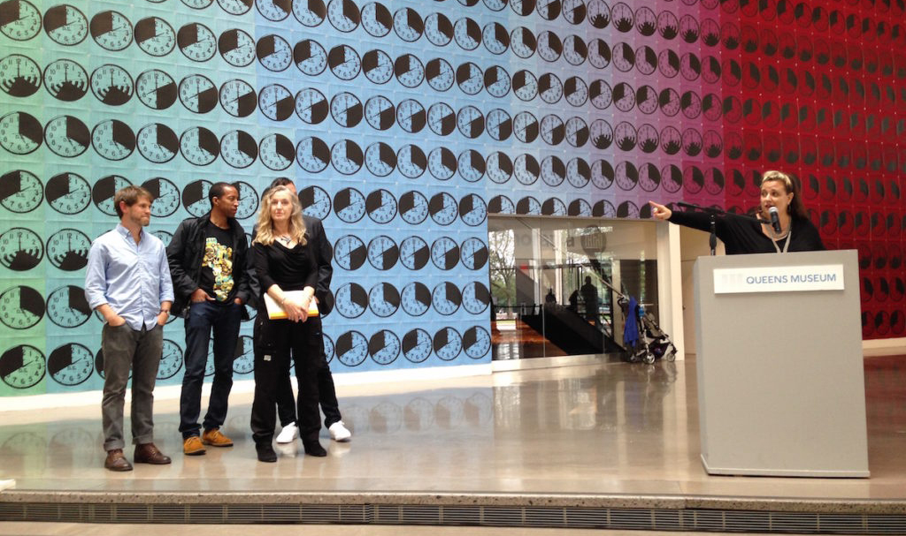
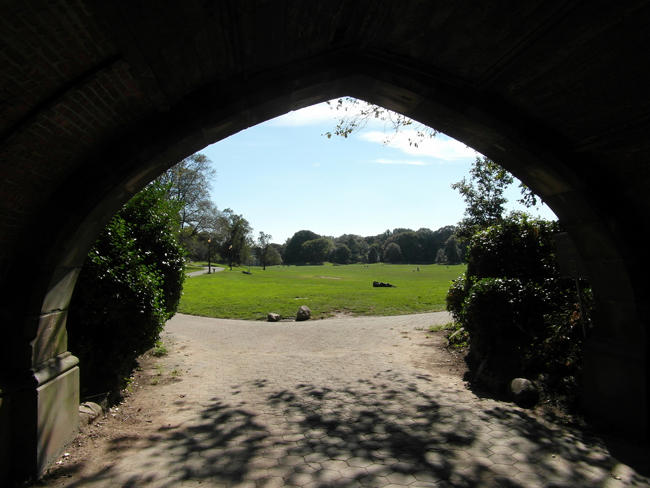
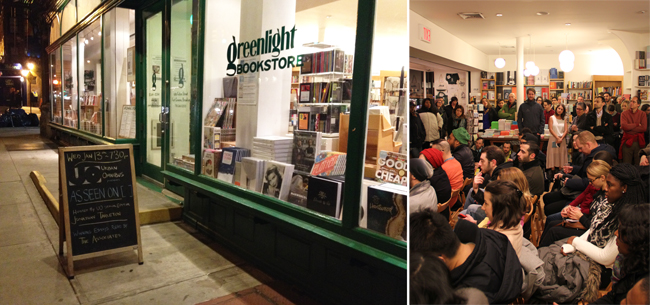

NYU Institute for Public Knowledge w/ Joshua Jelly-Schapiro & Sophie Gonick | October 22, 2025 @ 5:30pm | New York, New York
Watch this space for additional Homes for Living events, or subscribe to my newsletter Rectangle | Square:
Past
Porter Square Books w/ Henry Grabar | May 13, 2025 @ 7pm | Cambridge, Massachusetts
UNC Southern Oral History Program w/ Jacquelyn Dowd Hall | April 23, 2025 @ 6pm | Chapel Hill, North Carolina
Georgia Tech School of City & Regional Planning w/ Gregory Randolph | April 8, 2025 @ 6pm | Atlanta, Georgia
{kind=link}
Solid State Books w/ Sharon Cornelissen | March 26, 2025 @ 7pm | Washington, DC
Housing Works Bookstore & Municipal Art Society w/ Cassim Shepard | March 19, 2025 @ 6pm | New York, New York
Red Emma's w/ Lawrence Lanahan | March 13, 2025 @ 7pm | Baltimore, Maryland
MIT + Harvard Joint Center for Housing Studies w/ Justin Steil | March 10, 2025 @ 12:30pm | Cambridge, Massachusetts
Politics & Prose at the Wharf w/ Amanda Huron | February 28, 2025 @ 7pm | Washington, DC
People's Book w/ Andrew Trueblood | February 22, 2025 @ 2pm | Takoma Park, Maryland
NYU Wagner School of Public Service w/ Reed Jordan | February 12, 2025 @ 12pm | New York, New York
Greenlight Bookstore w/ Joseph Terrell | February 11, 2025 @ 7:30pm | Brooklyn, New York
Nonstop Metropolis at NYU's Institute for Public Knowledge | 10.17.16
Presentation and conversation with Rebecca Solnit, Joshua Jelly-Schapiro, and Garnette Cadogan on maps and techniques across the atlas.

Nonstop Metropolis at the Queens Museum | 10.3.16
In conjunction with the exhibition Nonstop Metropolis: The Remix—inspired by the atlas—readings with Rebecca Solnit, Joshua Jelly-Schapiro, Garnette Cadogan, Mirissa Neff, Heather Smith, Sheerly Avni, and yours truly. Photo by Pema Domingo-Barker.

Brooklyn Holiday Book Fair Walk: Olmsted & Moses in Park Slope | 12.3.16
With Nathan Storring (Vital Little Plans), a walk chronicling the imprint of Frederick Law Olmsted and Robert Moses on Park Slope, from Prospect Park to the Prospect Expressway. Photo by Reading Tom.
City as Living Laboratory Walk: Our Democratic Public Space | 10.25.15
The first of two walks with Garnette Cadogan at the invitation of Mary Miss and City as Living Laboratory on the history of the Upper West Side seen through its “public” spaces, from subsidized housing to parks created through mass displacement.
City as Living Laboratory Walk: Places, Pleasures, & Public Space | 5.7.16
Another iteration of Garnette’s and my Upper West Side walk, joined by New York City’s former chief naturalist Mike Feller and designer Howard Chambers, for the annual Janes Walk.

As Seen On [ ] Launch at Greenlight Bookstore | 1.13.16
Sending the book collecting the winners of the fourth annual Urban Omnibus writing competition into the world, with readings by devised theater company The Associates and Xandra Clark at one of the finest bookstores in New York.